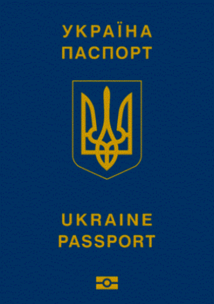

СТОИМОСТЬ ОФОРМЛЕНИЯ ЗАГРАНПАСПОРТА:

Паспорт гражданина Украины (для лиц, достигших 14-летнего возраста);
Свидетельство о рождении (в случае оформления паспорта для выезда за границу впервые лицу, не достигшему 14-летнего возраста);
В случае оформления паспорта лицу, не достигшим двенадцатилетнего возраста, или лицу, которое не может передвигаться самостоятельно в связи с длительным расстройством здоровья, что подтверждается соответствующей справкой лечебного учреждения, может быть подано две цветные фотографии размером 3,5 х 4 5 сантиметра и одну фотографию размером 10 х 15 сантиметров для внесения оцифрованного изображения лица путем сканирования.
Лица достигшие 18 лет, которые оформляют паспорт гражданина Украины для выезда за границу впервые (или в порядке обмена паспорта оформленного до 2007 года) представляют документ о регистрации в Государственном реестре физических лиц - плательщиков налогов в случае его наличия.
Для оформления паспорта для выезда за границу лицу, не достигшим шестнадцатилетнего возраста и проживает с одним из родителей дополнительно подается оригинал или заверенная в установленном порядке копия одного из следующих документов: